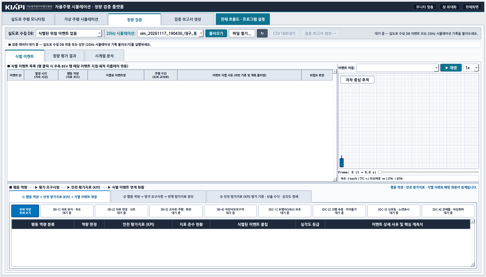
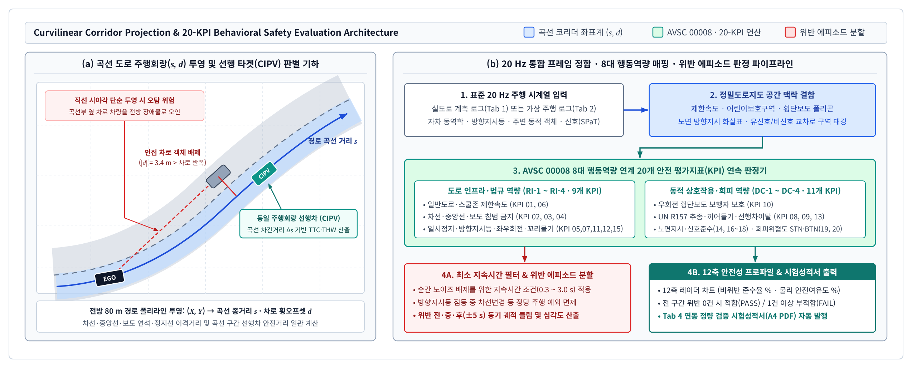

정량 검증 프로그램(Tab 3) 사용법 및 20-KPI 판정 기준
실도로 주행 데이터 또는 20Hz 시뮬레이션 기록에 대해 AVSC 00008 8대 행동역량 및 UN R157 · RSS 기반 20개 안전 평가지표(KPI 01~20)를 평가하고, 12축 레이더 차트·시계열 동기화·질의응답 콘솔을 활용하는 방법을 안내합니다.

그림 1. [Tab 3: 정량 검증] 화면 — 상단 데이터 로더, 좌측 식별 이벤트·정량 결과·시계열 분석 탭, 우측 동기화 2D 궤적 재생기, 하단 행동역량 매핑 및 질의응답 콘솔.
1. 정량 검증 화면(Tab 3) 사용 방법 및 동기화 리플레이 뷰어 명세
- 주행 기록 로드: Tab 1·Tab 2에서
[정량 검증 →]으로 전달받거나, 상단 바에서실도로 수집 DB이벤트 또는20Hz 시뮬레이션저장 파일을 선택해[불러오기](또는[파일 열기...])를 클릭합니다. - 이벤트 목록 · 레이더 · 시계열 파형 동기화 분석:
[식별 이벤트]탭의 위반 행을 클릭하면 우측 2D 지도 재생기가 해당 발생 구간으로 이동하며,[▶ 재생]및 프레임 슬라이더로 위반 전후 궤적과 물리량을 확인합니다.[정량 평가 결과]탭에서는 20개 KPI 집계표와 12축 레이더 차트를 확인합니다.[시계열 분석]탭에서는 파형 패널 수(1~6개)를 지정해 전 구간 그래프를 열람하며, 붉은 반투명 위반 구간이나 그래프의 특정 시점을 클릭하면 우측 2D 지도 재생기가 해당 프레임으로 동기화 이동합니다.
- 행동역량 매핑 조회 및 질의응답 콘솔: 하단
[RI-1] ~ [DC-4]버튼으로 역량별 세부 내역을 필터링하거나,■ 정량 진단 질의응답 콘솔([질의 실행])에서 평가 수치 기반 원인 질의를 수행할 수 있습니다. 결과 요약표는[CSV 내보내기]로 저장하거나[검증 보고서 생성 →]으로 Tab 4에 전달합니다.
| Tab 3 리플레이 뷰어 구성 요소 | 표시 정보 및 상호작용 방식 | 검증 분석 시 활용 포인트 |
|---|---|---|
| 상단 프레임 정량 지표 블랙박스 | 현재 재생 프레임의 주행 시각(s), 차속·제한속도, 전방 TTC·THW, 차선·정지선 거리 및 해당 시점 활성 위반 KPI 배지 표시 | 위반 시작·종료 경계 프레임에서의 정확한 수치 임계치 초과 여부 판독 |
| 하단 2D 정밀지도 궤적 재생기 | 정밀지도 차선·중앙선·보도경계·정지선 도면 위에 자차 전 구간 주행 궤적 실선과 현재 프레임의 자차·주변 타겟 회전 박스(OBB) 및 속도 벡터 표시 | 위반 당시 차선 침범 깊이, 정지선 통과 위치, 끼어들기 차량과의 기하학적 상대 위치 확인 |
| 3방향 양방향 프레임 동기화 | ① 좌측 [식별 이벤트] 표 클릭 ↔ ② 우측 상단 위반 이벤트 선택창 ↔ ③ [시계열 분석] 그래프의 적색 위반 음영 구간 클릭 연동 | 표·파형·2D 지도 중 어느 곳을 클릭하더라도 동일한 위반 발생 프레임으로 즉시 동기화 이동 |
2. 곡선 주행회랑 투영 및 동적 지표 산출식
곡선 도로에서 인접 차로 차량을 전방 타겟(CIPV)으로 오인하는 현상을 줄이기 위해, 전방 80 m 주행 경로 폴리라인 위로 주변 객체를 투영하여 차로 곡선 거리(s)와 차로 내 횡오프셋(d)을 계산한 뒤 아래 수식을 적용합니다.

그림 2. 곡선 도로 주행회랑(s, d) 투영을 통한 선행 타겟(CIPV) 판별 기하(a) 및 AVSC 00008 연계 20-KPI·위반 에피소드 판정 파이프라인(b).
동적 안전 평가지표 산출 수식 (UN R157 · RSS · STN · BTN)
1) UN R157 속도별 최소 차두시간: tfront(vkph) = interp(vkph, [7.2, 10, 20, 30, 40, 50, 60] km/h → [1.0, 1.1, 1.2, 1.3, 1.4, 1.5, 1.6] s)
2) TTC · THW · RSS 여유거리: TTC = sCIPV / vrel, THW = sCIPV / vego, MRSS = dCIPV − vego · tfront(vkph)
3) 조향 회피 위협도 (KPI 19): STN = clip( (6 · vego2 / d2) / 5.0, 0.0, 5.0 ) (3.0m 횡회피 기준, 횡가속도 한계 5.0 m/s²)
4) 제동 회피 위협도 (KPI 20): BTN = clip( (vego2 / (2d)) / 8.0, 0.0, 5.0 ) = clip( vego2 / (16d), 0.0, 5.0 ) (제동 한계 −8.0 m/s²)
2) TTC · THW · RSS 여유거리: TTC = sCIPV / vrel, THW = sCIPV / vego, MRSS = dCIPV − vego · tfront(vkph)
3) 조향 회피 위협도 (KPI 19): STN = clip( (6 · vego2 / d2) / 5.0, 0.0, 5.0 ) (3.0m 횡회피 기준, 횡가속도 한계 5.0 m/s²)
4) 제동 회피 위협도 (KPI 20): BTN = clip( (vego2 / (2d)) / 8.0, 0.0, 5.0 ) = clip( vego2 / (16d), 0.0, 5.0 ) (제동 한계 −8.0 m/s²)
3. AVSC 00008 8대 행동역량 및 20-KPI 판정 기준표
전체 주행 세션은 20개 KPI 위반 에피소드 합계가 0건일 때 적합 [PASS], 1건 이상일 때 부적합 [FAIL]로 판정됩니다.
| 역량 코드 | AVSC 00008 행동역량 명칭 | 연계 평가지표 (KPI) | 핵심 요구 행동 요약 |
|---|---|---|---|
RI-1 | 도로 제한속도 및 차로 경계 준수 | KPI 01, 02, 03, 04 | 구간별 법정 속도 준수 및 차선·중앙선·보도 연석 외곽 비침범 유지 |
RI-2 | 진로 변경 및 교차로 방향지시 신호 이행 | KPI 07 | 회전 및 차로 변경 진입 전 사전 방향지시등 연속 점등(3초 또는 30 m 이상) |
RI-3 | 교차로 통행 우선권 및 통행방법 준수 | KPI 05, 11, 12, 15 | 비신호 정지선 일시정지, 좌·우회전 선회 속도 관리 및 정체 시 진입 억제 |
RI-4 | 교통약자(어린이) 보호구역 법규 준수 | KPI 06 | 어린이보호구역 내 강화 제한속도(30~40 km/h 이하) 엄격 준수 |
DC-1 | 보행자 등 취약 도로이용자(VRU) 보호 | KPI 10 | 우회전 횡단보도 보행자 검지 시 일시정지 및 안전 통과 대기 |
DC-2 | 종방향 추종 안전거리 및 끼어들기 대응 | KPI 08, 09, 13 | 선행차 추종 및 끼어들기·이탈 상황에서 요구 TTC·UN R157 차두시간 확보 |
DC-3 | 교통신호 및 노면표시 지시 준수 | KPI 14, 16, 17, 18 | 차로 진행 방향 화살표 일치 및 적·황·녹색 현시별 정지·진행 판단 |
DC-4 | 장애물 비상 조향·제동 회피 여유도 확보 | KPI 19, 20 | 전방 급접근 위험 시 타이어·제동 물리 한계 이내의 회피 여유(STN·BTN ≤ 1.0) 유지 |
| KPI | 역량 | 평가지표 명칭 | 위반 판정 조건 · 면제 규칙 · 최소 지속시간 | 심각도 등급 |
|---|---|---|---|---|
| KPI 01 | RI-1 | 일반 도로 제한속도 준수 | 어린이보호구역 외 도로(제한속도 40 km/h 초과): 초과분 1~20 km/h(Minor), 20 km/h 초과(Critical)가 1.0초 이상 연속 지속 시 위반 | Minor / Critical |
| KPI 02 | RI-1 | 차로 유지 (차선 침범 금지) | 5 km/h 이상 주행 중 차선과의 거리가 차폭 절반(0.91 m) 미만으로 0.3초 이상 지속 (방향지시등 점등·교차로 회전·유턴 구간 면제) | Minor |
| KPI 03 | RI-1 | 중앙선 침범 금지 | 5 km/h 이상 주행 중 황색 중앙선 침범 깊이가 0.6 m를 초과하여 0.6초 이상 지속 시 위반 | Critical_violation |
| KPI 04 | RI-1 | 보도(도로경계) 침범 금지 | 5 km/h 이상 주행 중 보도 연석·도로경계 침범 깊이가 0.5 m를 초과할 경우(1프레임 이상) 위반 | Critical_violation |
| KPI 05 | RI-3 | 비신호 교차로 일시정지 | 비신호 정지선 전방 20m 접근 중 속도 15 km/h 초과 이력이 있으면서 정지 누적시간 3.0초 미만으로 정지선 2.0m 이내 진입 시 위반 | Major |
| KPI 06 | RI-4 | 어린이보호구역 제한속도 준수 | 어린이보호구역(제한속도 40 km/h 이하 구간)에서 제한속도를 1.0 km/h 초과하여 1.0초 이상 주행 시 위반 | Critical |
| KPI 07 | RI-2 | 교차로 진입 방향지시등 이행 | 교차로 좌·우회전 수행 시 진입 전 최소 3.0초 또는 30.0m 이상 해당 방향지시등을 연속 점등하지 않은 경우 위반 | Minor |
| KPI 08 | DC-2 | 전방 추종 안전거리 (TTC / UN R157) | 전방 선행차(CIPV) 대비 TTC < 0.5초 또는 THW < UN R157 최소 차두시간(1.0~1.6초)이 0.5초 이상 지속 시 위반 (TTC < 2.0초 Moderate) | Moderate / Critical |
| KPI 09 | DC-2 | 끼어들기(Cut-In) 안전 대응 | 끼어들기 차량 인지 후 0.72초 경과 뒤에도 요구 TTC 또는 UN R157 차두시간을 회복하지 못한 상태가 0.5초 이상 지속 시 위반 | Major |
| KPI 10 | DC-1 | 우회전 시 횡단보도 보행자 보호 | 우회전 중 정밀지도 횡단보도 영역(전방 10m × 좌우 3m) 내 보행자 존재 시 정지하지 않고 0.3 m/s 초과 속도로 주행 시 위반 | Critical |
| KPI 11 | RI-3 | 신호교차로 좌회전 통행방법 | 신호교차로 내부 좌회전 통과 중 주행속도 30.0 km/h를 0.5초 이상 초과 시 위반 | Moderate |
| KPI 12 | RI-3 | 신호교차로 우회전 통행방법 | 우회전 진입 전 30m 구간 우측 가장자리 차로 미이용 또는 교차로 내부 선회 속도 30.0 km/h 0.5초 이상 초과 시 위반 | Moderate |
| KPI 13 | DC-2 | 선행차 이탈(Cut-Out) 급가속 억제 | 직전 선행차 이탈 후 노출된 전방 차량이 안전거리 이내에 있음에도 1.5초 이내에 0.3 m/s² 이상 가속 시 위반 | Moderate |
| KPI 14 | DC-3 | 노면표시 방향 화살표 지시 준수 | 차로 노면의 직진·좌회전·우회전 화살표를 통과한 뒤 다음 교차로에서 지시와 다른 방향으로 진행 시 위반 | Moderate |
| KPI 15 | RI-3 | 교차로 꼬리물기 금지 | 신호교차로 내부에서 전방 10m 이내 선행차 정체로 인해 3.0초 초과 정차 시 위반 | Major |
| KPI 16 | DC-3 | 적색 교통신호 정지 준수 | 진행 방향 신호가 적색일 때 0.3 m/s 초과 속도로 교차로에 진입 시 위반 | Critical |
| KPI 17 | DC-3 | 황색 교통신호 딜레마존 판단 | 황색 전환 시점 속도 기준 안락 감속(5.0 m/s², 정지거리 v²/10)으로 정지선 전 정지가 가능했음에도 진입 시 위반 | Moderate |
| KPI 18 | DC-3 | 녹색 교통신호 불필요 정지 금지 | 녹색 진행 신호이고 전방 선행차 막힘이 없음에도 교차로 전방에서 3.0초 이상 정차 시 위반 | Minor |
| KPI 19 | DC-4 | 조향 회피 위협도 (STN) | 전방 장애물 3.0m 횡방향 회피 요구 횡가속도 비율 STN > 1.0 상태가 0.3초 이상 지속 시 위반 | Critical |
| KPI 20 | DC-4 | 제동 회피 위협도 (BTN) | 전방 장애물 앞 정지 요구 감속도 비율(한계 -8.0 m/s² 기준) BTN > 1.0 상태가 0.3초 이상 지속 시 위반 | Critical |
4. 12축 레이더 차트 구성 (준수율 % 및 안전여유도 %)
| 레이더 축 (12축) | 연계 KPI | 준수율 (Compliance %) 기준 | 안전여유도 (Safety Margin %) 기준 |
|---|---|---|---|
01. 제한속도 | KPI 01 | 비위반 프레임 비율 (위반 발생 시 75% 상한) | 제한속도 대비 여유 속도 비율 (V_limit - V) / V_limit |
02. 어린이보호 | KPI 06 | 스쿨존 속도 준수 비율 (위반 시 75% 상한) | 스쿨존 제한속도 대비 여유 비율 |
03. 차로유지 | KPI 02 | 차선 비침범 비율 (위반 시 75% 상한) | 차선 경계 최소 이격거리 정규화 (d_lane / 1.60m) |
04. 중앙·보도선 | KPI 03, 04 | 중앙선·보도 비침범 비율 (위반 시 75% 상한) | 중앙선·도로경계 최소 거리 정규화 (d / 1.80m) |
05. 방향지시등 | KPI 07 | 회전 전 사전 점등 이행 비율 | 진입 전 점등 시간·거리 여유 |
06. 교차로통행 | KPI 05, 11, 12, 15 | 일시정지·회전속도·꼬리물기 준수율 | 교차로 통과 속도 및 정지선 정차 여유 |
07. 노면지시 | KPI 14 | 노면 방향 화살표 일치 비율 | 진입 차로 지시 대비 진행 방향 일치도 |
08. 교통신호 | KPI 16, 17, 18 | 적·황·녹색 신호 준수율 (위반 시 75% 상한) | 황색 감속 여유 및 신호 준수 마진 |
09. 추종안전 | KPI 08 | 전방 TTC·THW 충족 비율 | min(TTC / 4.0s, THW / 2.5s) |
10. 끼어들기 | KPI 09, 13 | 끼어들기·선행차 이탈 대응 비율 | 끼어들기 차량 대비 종방향 간격 여유 |
11. 보행자보호 | KPI 10 | 횡단보도 보행자 보호 준수율 | 횡단보도 보행자와의 정지 이격거리 여유 |
12. 회피여유 | KPI 19, 20 | STN·BTN 임계 이하 비율 (위반 시 75% 상한) | 1 - max(STN, BTN) |